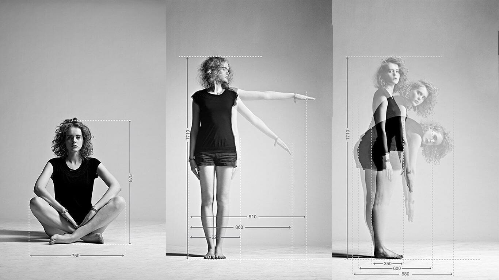
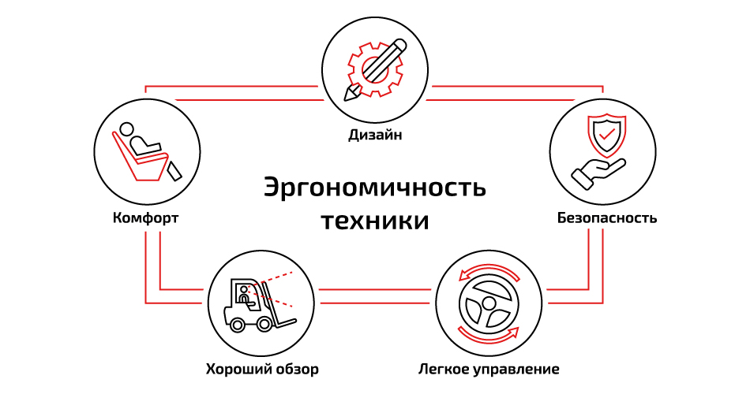

Эргономика — это научная дисциплина и практика, изучающая взаимодействие человека с элементами системы (инструментами, оборудованием, окружающей средой) для оптимизации комфорта, безопасности и производительности труда. Она занимается адаптацией рабочего места, предметов и задач к физическим и психологическим особенностям человека, чтобы минимизировать дискомфорт и риск травм, повышая при этом эффективность.